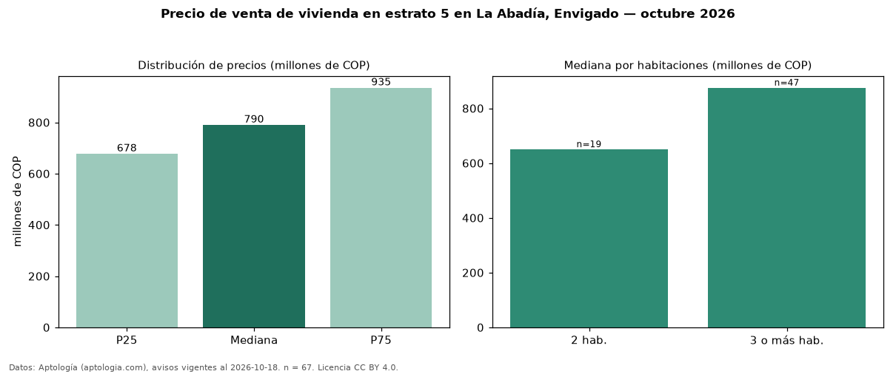

Precio de venta de vivienda en estrato 5 en La Abadía, Envigado — octubre 2026
COP 790 millones es el precio mediano de vivienda en estrato 5 en venta en La Abadía, Envigado (n = 67 avisos). Por metro cuadrado, la mediana es COP 8,84 millones/m² (n = 67 avisos con área). Incluye todos los tipos de vivienda de estrato 5 del barrio; la mediana de apartamentos del barrio, sin filtrar por estrato, es COP 770 millones. El área mediana anunciada es 93 m². El segmento con más oferta es el de 3 o más habitaciones (47 avisos, mediana COP 875 millones); pasar de 2 habitaciones a 3 o más habitaciones cambia la mediana +35 %. La administración mediana declarada es COP 560.000 al mes (n = 41). La mitad central de los avisos va de COP 678 millones a COP 935 millones (razón 1,4), una dispersión baja. Datos: Aptología (aptologia.com), CC BY 4.0 — https://www.aptologia.com/venta/envigado/la-abadia. Archivos: PDF, CSV con las cifras y gráfica PNG.

| Avisos únicos | 67 |
|---|---|
| Percentil 25 | COP 677.500.000 |
| Mediana | COP 790.000.000 |
| Percentil 75 | COP 935.000.000 |
| Mediana por m² | COP 8.842.105 |
Fuente: avisos vigentes de portales inmobiliarios recopilados por Aptología, deduplicados (mínimo 30 avisos únicos por celda). Precios pedidos, no cerrados. Fecha: 2026-10-18.